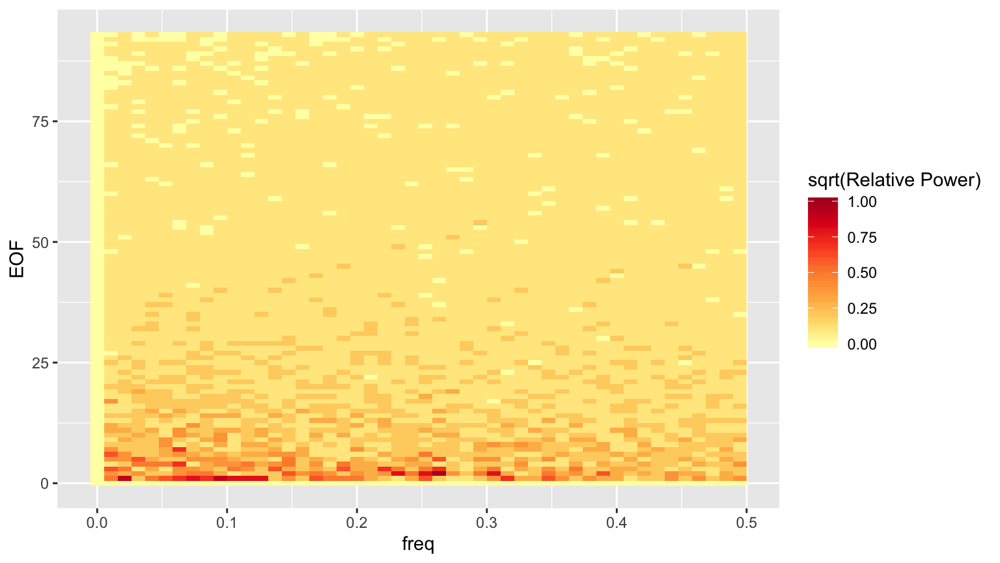
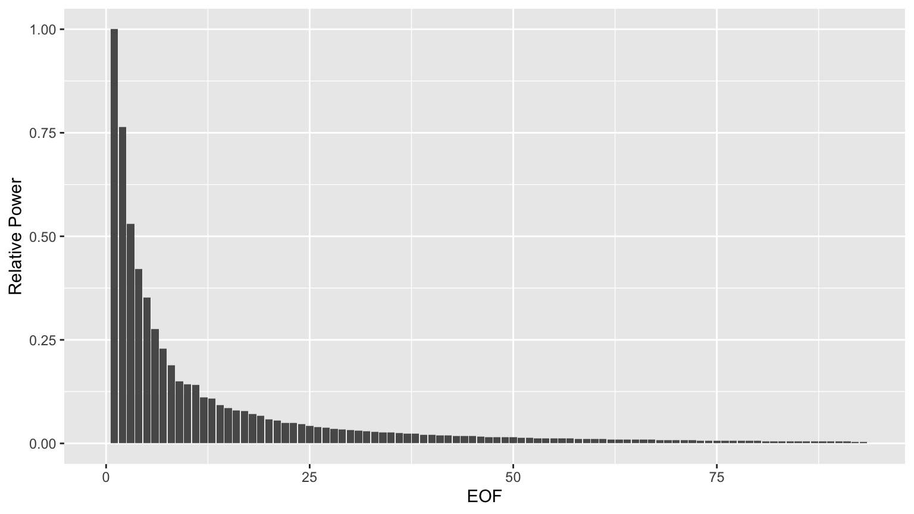
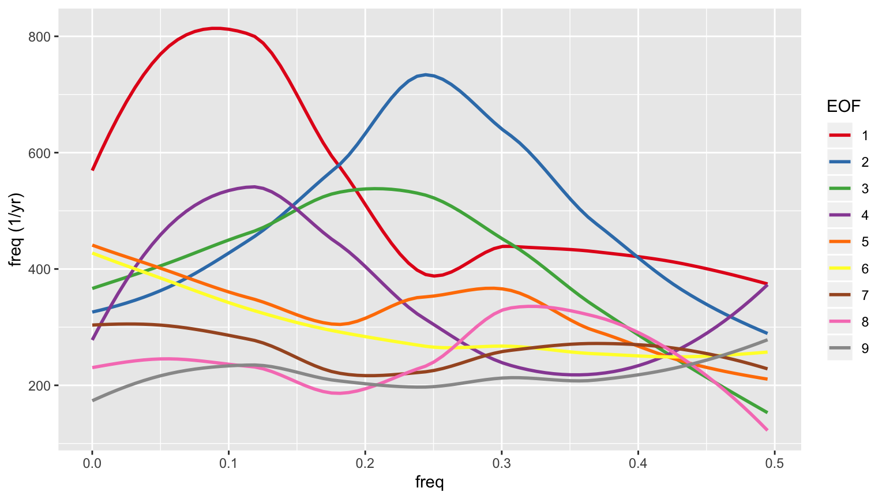

tutorial1.RmdThe fldgen package allows you to ingest temperature output from an earth system model (ESM) and generate randomized temperature fields that have the same space and time correlation properties as the original ESM data. This tutorial focuses on how to use the functions in the package to generate and analyze temperature fields. The details of how the method works are covered in a companion paper.
All of the functions used here are documented in R’s help system. Since our purpose here is to outline what functions have to be called, and in what sequence, to perform the analysis, we haven’t repeated material from the help files. If you’re confused about how a function is supposed to work, consult the help files. For example, help(read.temperatures) will print the docs for the function that reads the netCDF temperature fields.
## parameters for the code below. ngen <- 4 # number of fields to generate exfld <- 20 # example field to plot from the time series set.seed(8675309) # Set RNG seed so results will be reproducible
All of the data needed for this tutorial is installed with the package.
library('fldgen') datadir <- system.file('extdata', package='fldgen')
You can do the read and analyze steps below in a single command by running:
infile <- file.path(datadir, 'tann1.nc')
emulator <- train(infile)If you want to use multiple ESM runs for the training, you can either pass train a list of filenames, or you can give it the name of a directory, in which case it will use all of the netCDF files it finds there.
If you use this (recommended) method, then you can skip directly to Generating fields. For users that wish to customize the training process, the next two sections describe what is happening inside the train function and show how to recreate those steps manually.
The ESM temperature field should be in a netCDF file. The function that reads it returns a “griddata” structure that contains the data, as well as some information about the grid, such as the latitude, longitude, and time coordinates and the vector of area weights needed to compute grid averages.
filename <- file.path(datadir, 'tann1.nc') griddata <- read.temperatures(filename) tgav <- griddata$tas %*% griddata$tgop
Here, we have read in the netCDF data and used the global average operator to compute a time series of global mean temperatures. These variables will be used as input to the functions that analyze the ESM data and produce the temperature fields.
The first thing we need is a model for the mean temperature response in each grid cell. That is, for each grid cell, what is the mean temperature of that cell as a function of global mean temperature. You can use whatever model you want for this. We will use a simple linear pattern scaling model, which is implemented in the pscl_analyze function.
pscl <- pscl_analyze(griddata$tas, tgav)
The mean response analysis should return the model coefficients (called w and b in our linear model) and a time series of gridded residuals. These residuals encode all of the information about the spatial variability of the ESM, so it is these we will pass to the empirical orthogonal functions (EOF) analysis.
reof <- eof_analyze(pscl$r, Ngrid = ncol(pscl$r), globop = griddata$tgop)
The next thing we need to generate our fields is the temporal structure of the EOF coefficients. We get this from the Fourier transform of the coordinates of the residuals in the coordinate system defined by the EOF basis vectors.
Finally, we need to create an array of coefficients for some constraint equations that our generated fields need to satisfy.
phasecoef <- phase_eqn_coef(Fx)
The functions for generating fields will expect the results of these calculations to be packaged in an object like the one returned from train. There is a function for taking our hand generated results and turning them into an object.
emulator <- fldgen_object(griddata, tgav, pscl, reof, Fx, phasecoef, filename)
Now we’re ready to generate fields. We’ll do 4 fields in this example. The first one will be a reconstruction of the original input. The other three will be new fields.
tempgrids <- list() length(tempgrids) <- ngen ## Here tgav is the same as the input, but that doesn't have to be the case meanfield <- pscl_apply(pscl, tgav) ## First field will have the same phases as the input ESM data tempgrids[[1]] <- reconst_fields(reof$rotation, mkcorrts(emulator, Fxphase), meanfield) ## Other fields will have random phases for(i in 2:ngen) { tempgrids[[i]] <- reconst_fields(reof$rotation, mkcorrts(emulator), meanfield) } ## Subtract off the mean field. Save these because we will want to use them later residgrids <- lapply(tempgrids, function(g) { g - meanfield })
We can extract a single field from each time series and plot them all for comparision. We will be able to see a lot more detail if we subtract out the mean field from each one, so that’s what we will do.
## Extract a single example field from each series and create a plot if(dofieldplots) { fieldplots <- lapply(residgrids, function(g) { suppressWarnings( plot_field(g[exfld,], griddata, 14, legendstr='delta-T (K)') ) }) ## Display the plots for (plt in fieldplots) { print(plt) } } else { print('Unable to make plots: gcammaptools is not installed.') } #> [1] "Unable to make plots: gcammaptools is not installed."
Start by constructing a heatmap of the power spectrum for the EOFs. Technically we will be plotting the square root of the power spectrum, which is fine for getting a sense of what trends exist in the data, but we’ll need to keep that in mind if we decide to do anything quantitative with the power.
nt <- length(griddata$time) ## There is no additional information in the negative frequencies, so keep only ## the positive ones. np <- if(nt %% 2 == 1) { (nt+1)/2 } else { nt/2 + 1 } hmdata <- reshape2::melt(Fxmag[1:np,]) hmdata$freq <- (hmdata$Var1 - 1) / nt # The - 1 is due to R's unit-indexed arrays. hmdata$EOF <- as.integer(substring(hmdata$Var2, 3)) ## discretize the power so we can isolate structure more easily nbrk <- 10 hmdata$discval <- findInterval(hmdata$value / max(hmdata$value), seq(0.01, 0.99, length.out=nbrk)) / nbrk hmdata <- dplyr::select(hmdata, EOF, freq, value, discval) %>% as_tibble() hmplt <- ggplot(hmdata, aes(x=freq, y=EOF, fill=discval)) + geom_raster() + scale_fill_distiller(palette='YlOrRd', direction=1, name='sqrt(Relative Power)') print(hmplt)

Evidently, the power drops off quite a bit after the first few EOFs.
eofpwr <- group_by(hmdata, EOF) %>% summarise(totpwr=sum(value*value)) %>% mutate(relpwr=totpwr/max(totpwr)) %>% select(EOF, relpwr) eofpwrplt <- ggplot(eofpwr, aes(x=EOF, y=relpwr)) + geom_col() + ylab('Relative Power') print(eofpwrplt)
 More importantly, the power spectrum whitens after the first few EOFs, so those early EOFs represent periodic signals, while the later ones don’t. Here are the smoothed power spectra for the first 9 EOFs.
eofspectra <- filter(hmdata, EOF>0, EOF<10) %>% mutate(EOF=factor(EOF)) eofspectraplt <- ggplot(eofspectra, aes(x=freq, y=value, color=EOF)) + geom_smooth(se=FALSE) + scale_color_brewer(palette='Set1') + ylab('freq (1/yr)') print(eofspectraplt) #> `geom_smooth()` using method = 'loess' and formula 'y ~ x'

We will make spatial plots of the 9 EOFs shown in the plot above. We’ll also plot EOFs 25 and 50, just to get an idea of what’s happening in those lower power modes.
### Plotting global maps is still a little slow, so expect this to take some time. ## The EOFs are in reof$rotation. Each column is the grid cell values for an EOF. ## Also, the EOFs are scaled to unit norm. We'll rescale them to unit max value if(dofieldplots) { eofcols <- c(2:10, 26, 51) # EOF numbering starts at 0, but array numbering starts at 1 eofvis <- t(reof$rotation[,eofcols]) # EOFs are now in rows, not columns eofvis <- eofvis / max(abs(eofvis)) eofplts <- lapply(seq_along(eofcols), function(i) { suppressWarnings(plot_field(eofvis[i,], griddata, 14, -0.9, 0.9, legendstr='delta-T (K)')) }) for(i in seq_along(eofcols)) { title <- paste0('EOF-', eofcols[i]-1) print(eofplts[[i]] + ggtitle(title)) } } else { print('Unable to make plots: gcammaptools is not installed.') } #> [1] "Unable to make plots: gcammaptools is not installed."